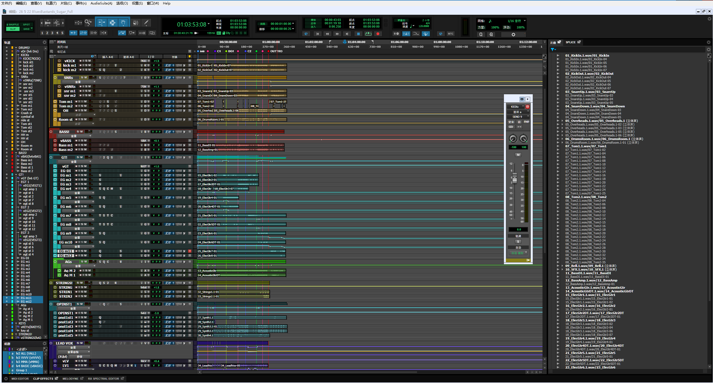
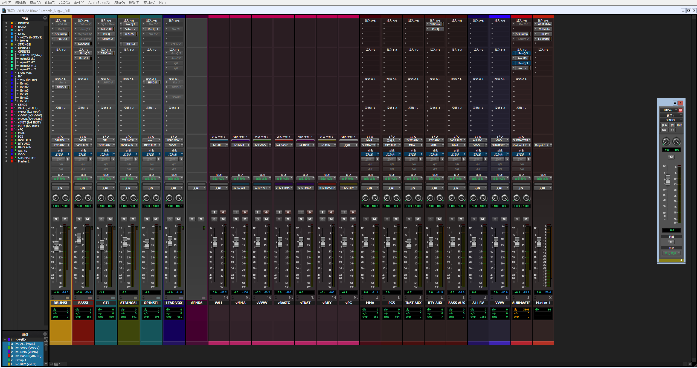
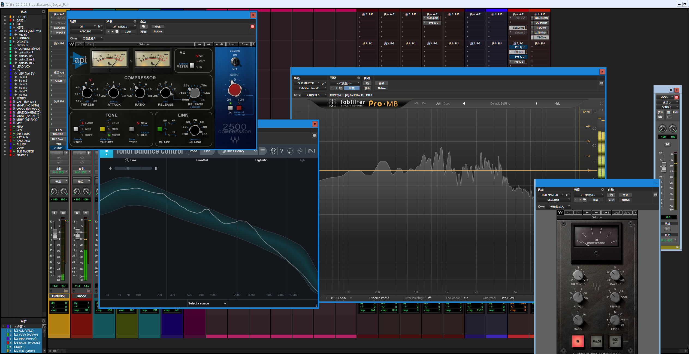
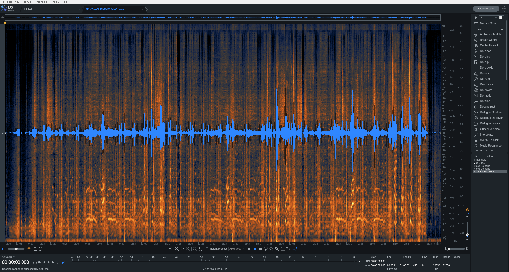
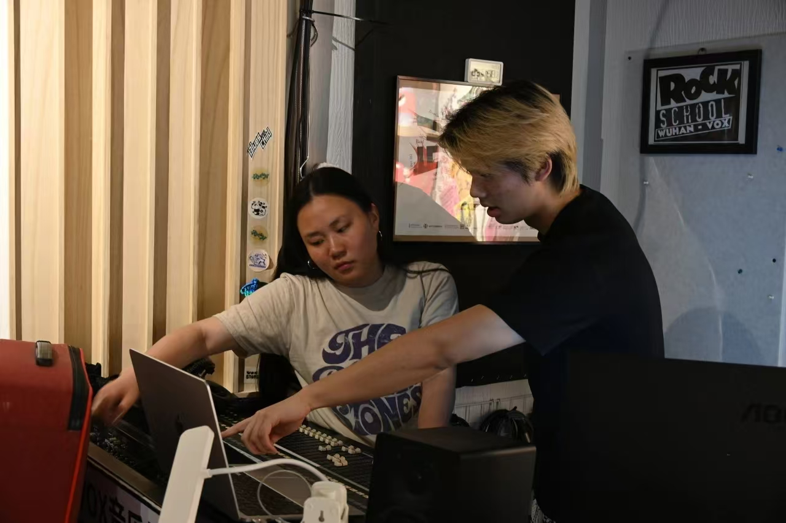

骆品卓
Mixing Engineer
专注混音工程 · 现场扩声
音频后期制作

专注混音工程 · 现场扩声
音频后期制作


Pro Tools · 工程模板 & 混音会话分轨混音时使用自制模板确保操作习惯一致；混音不仅是达到工程标准，更是将作品意图丰满地表达出来。


Waves · Fabfilter · Valhalla · Izotope熟练使用 Pro Tools、Fender Studio Pro 进行混音。精通 Waves 系列、Fabfilter 系列、Valhalla 系列、Izotope 系列插件。

VOX Livehouse · 舞台工程在 VOX Livehouse 进行过为期一年的舞台工程学习。现场拾音、跳线路由、大型模拟调音台操作均有实操经验，能独立完成小型音乐现场的系统搭建和扩声。